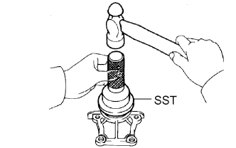
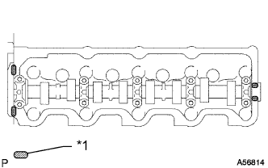

БЛОК ДВИГАТЕЛЯ > ПОВТОРНАЯ СБОРКА |
| 1. INSTALL REAR CRANKSHAFT OIL SEAL |
Using SST and a hammer, tap in a new oil seal until its surface is flush with the oil seal retainer edge.
Apply MP grease to lip of the oil seal.
| 2. INSTALL REAR CRANKSHAFT OIL SEAL RETAINER |
Install a new gasket and the retainer with the 4 bolts.
| 3. INSTALL FRONT CRANKSHAFT OIL SEAL |
 |
Using SST and a hammer, tap in a new oil seal until its surface is flush with the timing belt case edge.
Apply MP grease to the lip of the oil seal.
| 4. INSTALL TIMING BELT CASE SUB-ASSEMBLY |
Place a new gasket on the cylinder block.
Install the timing belt case with the 5 bolts.
| 5. INSTALL OIL STRAINER SUB-ASSEMBLY |
Install a new gasket and the oil strainer with the 2 bolts and 2 nuts.
| 6. INSTALL OIL PAN SUB-ASSEMBLY |
Remove any old packing (FIPG) material and do not drop any oil on the contact surfaces of the oil pan and cylinder block.
 |
Apply seal packing to the oil pan as shown in the illustration.
| Item | Seal Packing Diameter | Seal Packing Application Length |
| Dashed line | 7.0 mm (0.276 in.) | 128 mm (5.04 in.) |
| Continuous line | 5.0 mm (0.197 in.) | - |
| *1 | Seal Packing |
| *a | Timing Belt Case Contact Portion |
| *b | Rear Oil Seal Retainer Contact Portion |
Install the oil pan with the 16 bolts and 2 nuts. Uniformly tighten the bolts and nuts in several steps.
| 7. INSTALL CRANKSHAFT TIMING PULLEY |
 |
Align the key groove of the timing pulley with the pulley set key.
Using SST and a hammer, tap in the timing pulley with the flange side facing inward.
| *a | Inside |
| 8. INSTALL NO. 1 TIMING BELT IDLER SUB-ASSEMBLY |
Install the No. 1 belt idler with the 3 bolts.

| Item | Length |
| A | 76.5 mm (3.01 in.) |
| B | 42.9 mm (1.69 in.) |
| C | 41.3 mm (1.63 in.) |
| 9. INSTALL WATER PUMP ASSEMBLY |
Install a new gasket, the water pump and tension spring bracket with the 6 bolts.
| 10. INSTALL NO. 2 TIMING BELT IDLER SUB-ASSEMBLY |
Install the spacer and No. 2 timing belt idler with the bolt.
Check that the No. 2 timing belt idler moves smoothly.
| 11. INSTALL CYLINDER HEAD GASKET |
Check the piston protrusion for each cylinder.
 |
Find where the piston head protrudes most by slowly turning the crankshaft clockwise and counterclockwise.
| *a | Measuring Tip |
| *b | Protrusion |
Measure the protrusion of each cylinder at 2 places as shown in the illustration, making a total of 8 measurements.
| *a | Measuring Point |
 | Front |
For the piston protrusion value of each cylinder, use the average of the 2 measurements of that cylinder.
 |
Select a new cylinder head gasket.
| *1 | Cutout Mark |
| Front |
| Item | Specified Condition |
| Mark B | 1.40 to 1.50 mm (0.0551 to 0.0591 in.) |
| Mark D | 1.50 to 1.60 mm (0.0591 to 0.0630 in.) |
| Mark F | 1.60 to 1.70 mm (0.0630 to 0.0669 in.) |
Select the largest piston protrusion value from the measurements made, then select a new appropriate gasket according to the table below.
| Piston Protrusion | Gasket Size |
| 0.68 to 0.78 mm (0.0268 to 0.0307 in.) | Use B |
| 0.78 to 0.88 mm (0.0307 to 0.0346 in.) | Use D |
| 0.88 to 0.98 mm (0.0346 to 0.0385 in.) | Use F |
 |
Install the selected cylinder head gasket to the cylinder block.
| 12. INSTALL CYLINDER HEAD SUB-ASSEMBLY |
 |
Using the crankshaft pulley bolt, turn the crankshaft 90° counterclockwise, and align the timing mark of the crankshaft timing pulley with the protrusion of the timing belt case.
| Turn |
Place the cylinder head on the cylinder block.
Install the plate washers to the cylinder head bolts.
Apply a light coat of engine oil to the threads and under the heads of the cylinder head bolts.
Step 1:
Install and uniformly tighten the 18 cylinder head bolts, in several steps, in the sequence shown in the illustrations.
| Item | Length |
| Bolt A | 107 mm (4.21 in.) |
| Bolt B | 127 mm (5.00 in.) |
Step 2:
Mark the front side of each cylinder head bolt head with paint.
Tighten the cylinder head bolts 90° in the sequence shown in step 1.
Step 3:
Tighten the cylinder head bolts another 90° in the sequence shown in step 1.
Check that the paint marks are now at a 180° angle to the front.
| 13. INSTALL CAMSHAFT |
 |
Check that the timing mark of the crankshaft timing pulley is in the position shown in the illustration.
| *1 | Timing Mark |
| *2 | Protrusion |
Install the camshaft.
Place the camshaft on the cylinder head with the key groove facing upward.
 |
Install the 5 bearing caps in their proper locations.
 |
Apply a light coat of engine oil to the threads and under the heads of the bearing cap bolts.
Install and uniformly tighten the 10 bearing cap bolts in several steps in the sequence shown in the illustration.
| 14. INSTALL CAMSHAFT OIL SEAL |
|  |
Using SST and a hammer, tap in a new oil seal until its surface is flush with the oil seal retainer edge.
Apply MP grease to the lip of the oil seal.
| 15. INSTALL CAMSHAFT OIL SEAL RETAINER |
Install a new gasket and the retainer with the 4 bolts.
| 16. INSTALL CYLINDER HEAD COVER SUB-ASSEMBLY |
Remove any old packing (FIPG material).
|  |
Apply seal packing to the cylinder head as shown in the illustration.
| *1 | Seal Packing |
Install the gasket to the cylinder head cover.
Install the cylinder head cover with the 9 bolts and nut. Uniformly tighten the bolts and nut in several steps.
| 17. INSTALL NO. 2 TIMING BELT COVER |
Install the timing belt cover with the 4 bolts.
| 18. INSTALL CAMSHAFT TIMING PULLEY |
Install the woodruff key to the key groove of the camshaft.
 |
Align the timing mark on the camshaft timing pulley with the timing mark on the No. 2 timing belt cover and temporarily install the pulley with the bolt.
 |
Using SST, tighten the bolt.
| 19. INSTALL CRANKSHAFT POSITION SENSOR |
Apply a light coat of engine oil to the O-ring of the crankshaft position sensor.
Install the crankshaft position sensor with the bolt.
Connect the crankshaft position sensor connector.